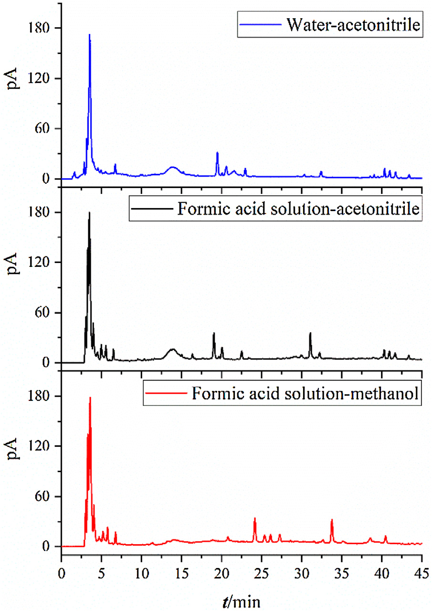
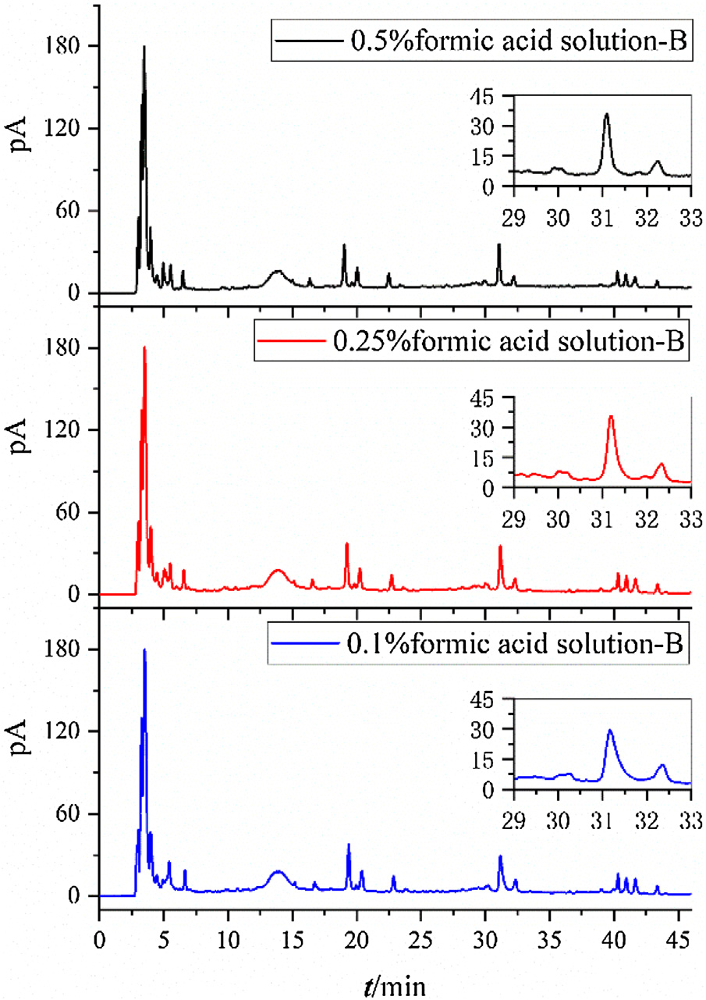
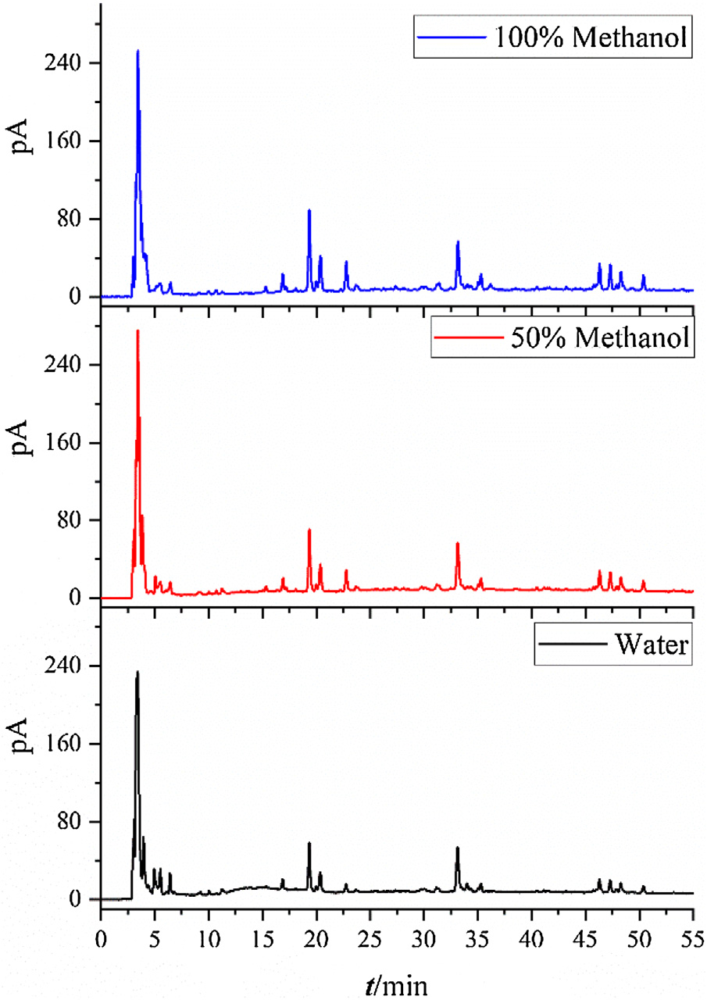
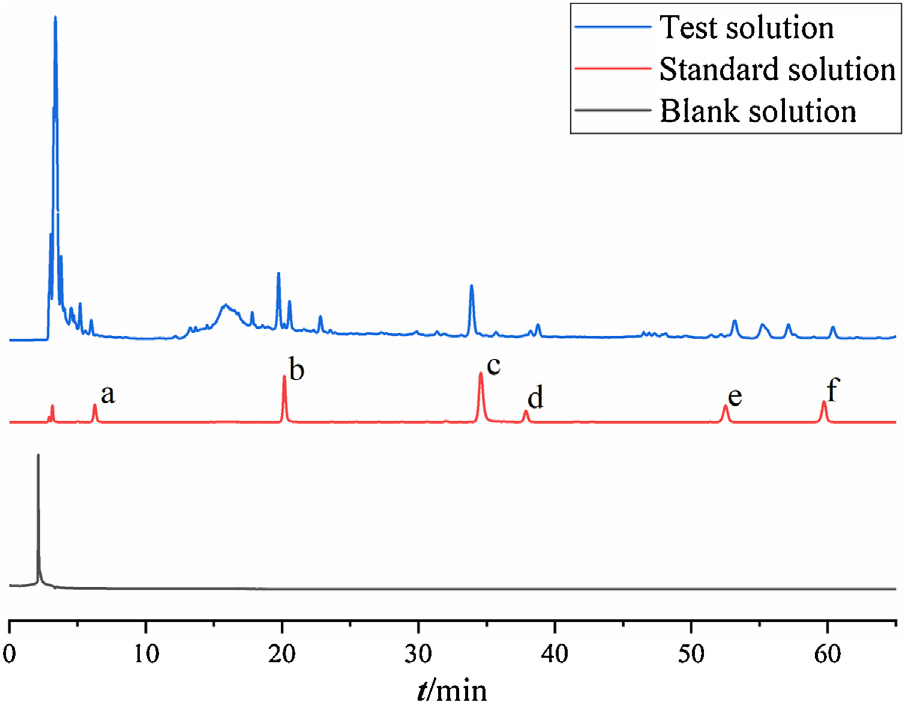
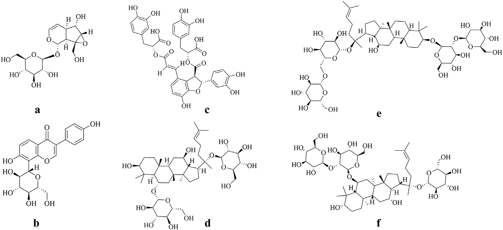
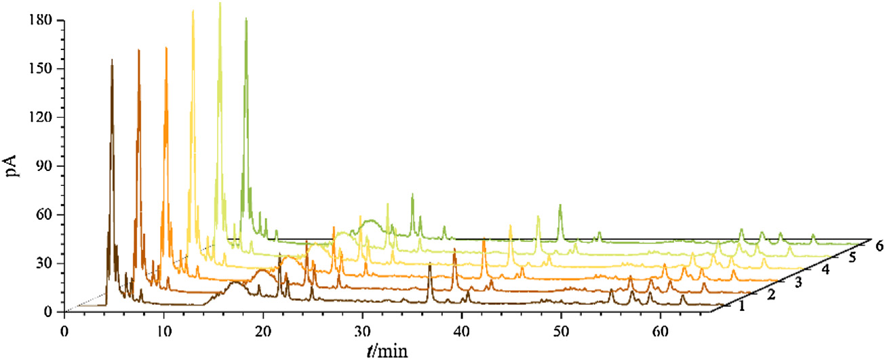
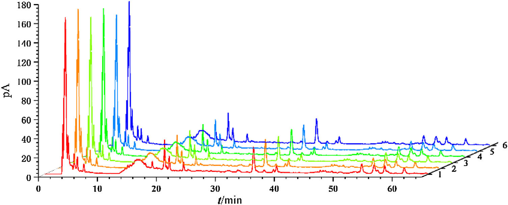
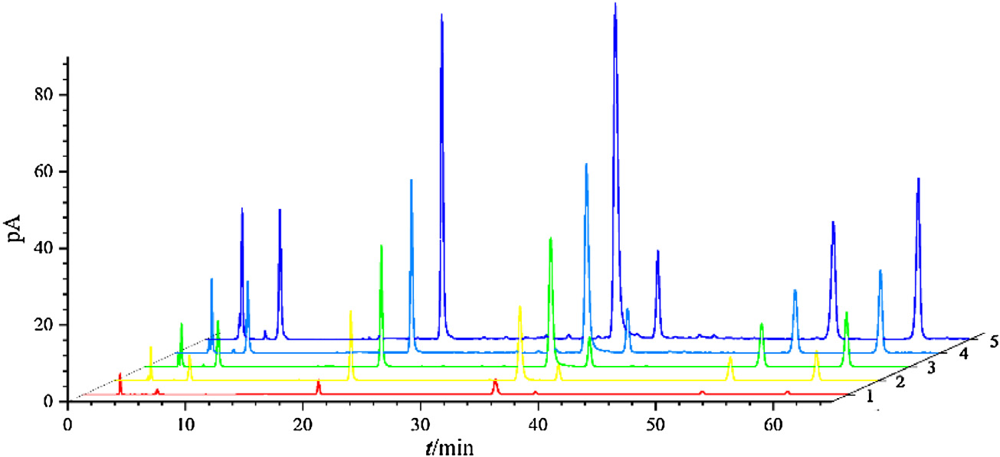
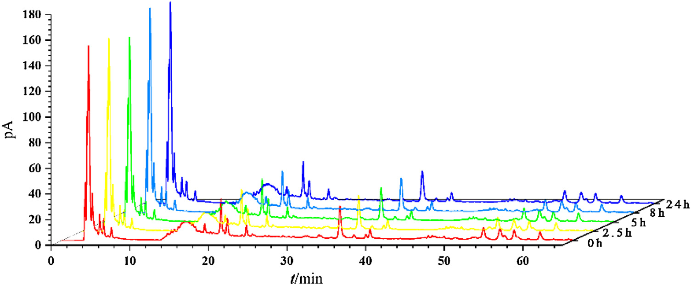
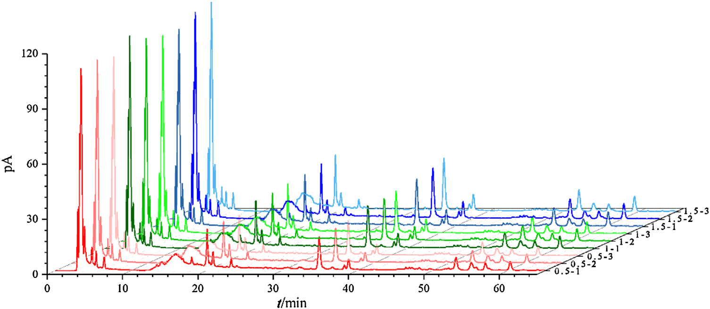

HPLC-CAD（荷電化エアロゾル検出器）による補腎活血方（BHP）中6成分の同時定量

<!-- Xie et al., J. Pharm. Biomed. Anal. 201 (2021) 114087 の全訳密度日本語版。 漢方方剤の多成分定量・CAD応用の実験論文。practitioner レベル。原文の全表（Table1-7）をパイプ表で再現。図（Fig.1-10）を本文に埋め込み。 CAD応答理論（式1-3）は本文の通り記載。2026-07-16 品質監査で密度不足のため再取得・全訳し直し（原文の表1・表3・表2/4/5/7の全行・全成分分を追加）。 -->
書誌情報
- 標題（原題）: Simultaneous determination of six main components in Bushen Huoxue prescription by HPLC-CAD
- 著者: Mengjun Xie, Yueting Yu, Ziyu Zhu, Liping Deng, Bo Ren（責任著者）, Mei Zhang（責任著者）
- 所属: 成都中医薬大学 薬学院（中国・四川省成都市温江区柳台大道1166号）
- 掲載誌・巻号・DOI: Journal of Pharmaceutical and Biomedical Analysis, 201 (2021) 114087. DOI: 10.1016/j.jpba.2021.114087
- インパクトファクター: 3.1（J. Pharm. Biomed. Anal., JCR 2024 / Clarivate。Q2）
- 受理経過: 2020年11月13日受領／2021年4月13日改訂／4月16日受理／4月23日オンライン公開。© 2021 Elsevier B.V.
- 資金: 国家自然科学基金（81774202）／四川省科技計画（2017JY0013）／四川省属大学科学研究創新チーム建設基金（18TD0017）／成都中医薬大学杏林学者育成プロジェクト（CXTD2018010）／成都中医薬大学「西南地域特色中薬資源系統研究」重点実験室オープン研究基金（2020XSGG017）
- 倫理: ヒト・動物を対象とした試験は含まれない（Ethical approval 節）
- 略語: HPLC=高速液体クロマトグラフィー、CAD=荷電化エアロゾル検出器、DAD=ダイオードアレイ検出器、RID=屈折率検出器、MSD=質量分析検出器、FLD=蛍光検出器、ELSD=蒸発光散乱検出器、BHP=補腎活血方、TCM=伝統中医薬、PLR=葛根（Puerariae Lobatae Radix）、SMRR=丹参（Salviae Miltiorrhizae Radix et Rhizoma）、RR=地黄（Rehmanniae Radix）、GRR=人参（Ginseng Radix et Rhizoma）、LOD=検出限界、LOQ=定量限界
補足: 補腎活血方（Bushen Huoxue prescription, BHP）は、著者らの研究グループが糖尿病網膜症の予防・治療用に独自開発した漢方複方（特許200910308470.3）で、葛根（Puerariae Lobatae Radix）・丹参（Salviae Miltiorrhizae Radix et Rhizoma）・地黄（Rehmanniae Radix）・人参（Ginseng Radix et Rhizoma）から成る。本論文の技術的核心は、UV吸収を持たない成分（ジンセノシド類）でも検出できる「荷電化エアロゾル検出器（CAD）」 を使い、性質の異なる6成分を1回の分析で定量した点。DAD（UV）検出では見えにくい生薬成分をどう定量するかという実務課題への解答である。
要旨（Abstract）
背景: 補腎活血方（BHP）は、著者らの研究グループが開発した糖尿病網膜症治療の伝統中医薬（TCM）方剤である。カタルポール・プエラリン・サルビアノール酸B・ジンセノシドRg1・ジンセノシドRb1・ジンセノシドRdは主要有効成分6つで、この方剤を部分的に代表しうる。荷電化エアロゾル検出器（corona CAD）はHPLCに装備される万能検出器の一種で、複雑混合物の分析に多くの利点を持つが、TCM化合物への応用はまだ少ない。
目的: 本研究の目的は、BHP中6成分の定量法を確立し、TCM化合物でのCADの利用を増やすことである。
方法: HPLC-CAD分析はInertsil ODS-SP（4.6 mm×250 mm, 5 μm）で、0.5%ギ酸溶液(A)-アセトニトリル(B)の移動相、流速1 mL/min（勾配: 0–7分 1%B；7–12分 1→12%B；12–22分 12→19%B；22–40分 19→28%B；40–43分 28→33%B；43–50分 33%B；50–65分 33→42%B）で実施。カラム温度30℃、注入量20 μL、噴霧温度モードLOW、濾過定数3.6、データ収集10 Hz。方法論を検討し、異なる関数の回帰直線性を比較。16バッチの試料を調製し含量を測定した。
結果: 6化合物は線形関数使用時に濃度範囲で良好な直線性（R²>0.9990）。平均回収率99.18%–101.30%。プエラリンとジンセノシドRg1のRSD値が平均回収率調査中にわずかに3%を超えたが、他の成分の方法論的調査は全て3%以内。精度・安定性・再現性は良好。16バッチのBHP試料で6成分の含量は、カタルポール0.3138%–0.6042%、プエラリン0.8095%–1.2917%、サルビアノール酸B0.7416%–1.1189%、ジンセノシドRg1 0.0231%–0.0418%、ジンセノシドRb1 0.0702%–0.1724%、ジンセノシドRd 0.0384%–0.1196%。
結論: HPLC-CADに基づくBHP中6成分定量法を、高精度・良好な再現性・簡便な操作で確立し、BHPの品質基準改善の参照を提供する。TCM複方方剤の定量でのCAD応用は合理的でアクセス可能である。
キーワード: HPLC-CAD、荷電化エアロゾル検出器、補腎活血方、含量測定
1. 序論（Introduction）
伝統中医薬（TCM）は、中国人の数千年にわたる疾病予防・治療経験の集大成である。現代研究はTCMが依然として医療に大きく貢献でき、多経路治療・少ない副作用などの利点を持つことを示した[1]。TCM方剤は、TCM理論に従った多数の生薬の有機的組み合わせで、TCMの最も重要な治療法である。
品質管理は薬の安全性・有効性を確保する重要な環である。試験の一部として、成分の定量的検出が注目を集めている。しかしTCM生薬はほぼ天然物由来のため、TCM方剤は高い化学的多様性を持ち、その品質は多くの因子に影響される[2]。これらの複雑な条件が検出を困難にする。さらにTCM方剤中のアナライトは大量または極微量で存在しうるため、検出には非常に高感度で選択的な方法が必要になりうる[3]。
HPLCは分離の最も汎用的な技術の一つで、多様な検出器を組み合わせられ、TCMの化合物分析に多くのアイデアを提供する。HPLCの一般的検出器には、DAD（ダイオードアレイ）・RID（屈折率）・MSD（質量分析）・FLD（蛍光）・ELSD（蒸発光散乱）・corona CAD（荷電化エアロゾル）などがある[3,4]。RIDは勾配溶出に不向き、FLDは高選択性のためTCM方剤の分析にほとんど使われない。DADはUV/vis検出の一分野で、広い応用・感度・広い直線範囲・勾配溶出との適合性からHPLCで最も一般的な検出だが、アナライト分子が適切な発色団を欠く場合（蛍光検出も非蛍光団の場合）に限界がある。非発色団化合物は、面倒な誘導体化手順を経るか、感度を損なう低UV波長法で分析せねばならない[5]。
そこで一般に、CADやELSDのような万能検出器に頼る。電気エアロゾル技術が両検出器の基盤だが[4,6]、CADはELSDより直線性・感度・安定性が優れるため、含量測定でCADの選択が大きな利点を持つ[7,8]。米国薬局方・欧州薬局方でCAD法の採用が増え、中国薬典の一般章にも新たに導入されたことは、CAD検出器への前向きな姿勢を反映する。複雑混合物検出の利点から、多くの天然物とその製剤がCADを分析ツールとして試みてきた[3,9,10]。現在、TCM・複方薬・その製剤でのCAD使用への熱意も高まっている——延齢草（Trillium tschonoskii）とTrillium kamtschaticum、鴉胆子（Brucea Javanica）種子、人参、三黄片（Sanhuang Tablet）など[11–14]。しかし現時点でTCM複方への応用報告は少ない。
補腎活血方（BHP）は、著者らの研究グループが早期に独自開発した糖尿病網膜症予防・治療のTCM複方（特許200910308470.3）で、葛根（PLR）・丹参（SMRR）・地黄（RR）・人参（GRR）から成る。先行研究で、プエラリン・カタルポール・サルビアノール酸B・ジンセノシドなどがこの複方の有効成分でありうると分かった[15,16]。ジンセノシドはUV発色団を欠く化合物として知られる[13,17]。したがって本研究では、有効成分の含量をHPLC-CADで同時定量し、BHPの他の関連研究の基礎支援を提供し、同時にTCMでのCAD応用を増やすことを目指した。
2. 材料と方法（Materials and methods）
2.1 植物材料
地黄（RR）は Rehmannia glutinosa Libosch. の乾燥塊根、丹参（SMRR）は Salvia miltiorrhiza Bge. の乾燥根、人参（GRR）は Panax ginseng C. A. Mey. の乾燥細枝・ひげ根、葛根（PLR）は Pueraria lobata (Willd.) Ohwi の乾燥根（Table 1）。成都の蓮池中薬材卸売市場で購入し、成都中医薬大学薬学院のJin Pei教授が鑑定。
Table 1. 使用した生薬の産地・収穫時期・ロット番号
| 生薬 | コード | 産地 | 収穫時期 | ロット番号 |
|---|---|---|---|---|
| 葛根(PLR) | A | 四川省綿陽市平武県 | 18年10月 | 20181011 |
| 葛根(PLR) | B | 重慶市開県 | 19年10月 | 20191023 |
| 葛根(PLR) | C | 四川省綿陽市平武県 | 19年12月 | 20191203 |
| 葛根(PLR) | D | 重慶市万州区 | 20年1月 | 20200111 |
| 丹参(SMRR) | I | 山東省 | 19年12月 | 20191210 |
| 丹参(SMRR) | II | 山東省臨沂市（細根） | 19年10月 | 20191010 |
| 丹参(SMRR) | III | 山東省臨沂市（太根） | 19年10月 | 20191022 |
| 丹参(SMRR) | IV | 山東省臨沂市 | 18年11月 | 20181127 |
| 地黄(RR) | 1с | 山西省運城市 | 19年11月 | 20191123 |
| 地黄(RR) | 2с | 河南省 | 19年10月 | 20191011 |
| 地黄(RR) | 3с | 山西省運城市 | 19年10月 | 20191015 |
| 地黄(RR) | 4с | 山西省運城市 | 18年12月 | 20181202 |
| 人参(GRR) | 1 | 吉林省撫松県（細枝・ひげ根） | 18年10月 | 20181024 |
| 人参(GRR) | 2 | 吉林省撫松県（細枝） | 19年10月 | 20191213 |
| 人参(GRR) | 3 | 吉林省撫松県（ひげ根） | 19年10月 | 20191203 |
2.2 装置
HPLCシステム（Dionex UltiMate3000, Thermo Fisher Scientific）に4元ポンプ・オンライン脱気装置・オートサンプラー・恒温カラムコンパートメント・荷電化エアロゾル検出器（Dionex Corona Veo, Thermo Fisher Scientific）を装備。
2.3 化学薬品と試薬
メタノール（分析用・HPLC級）・ギ酸（HPLC級）はChron Chemicals（成都）、アセトニトリル（HPLC級）はSigma-Aldrich（上海）、脱イオン水はMilli-Qシステム（Bedford, MA）で調製。カタルポール（MUST-18103011）・プエラリン（MUST-12101113）・サルビアノール酸B（MUST-16040702）はMust Biotechnology（成都）、ジンセノシドRg1（PS0148-0025）・Rb1（S0149-0025）・Rd（PS0343-0025）はPush Biotechnology（成都）。6化合物の純度はそれぞれ≥99.98%、≥99.71%、≥99.41%、≥98.0%、≥98.0%、≥95.0%。
2.4 試料溶液・標準溶液の調製
BHP抽出物は伝統的方法で調製。重量比（人参:地黄:丹参:葛根＝1:2:2:2）でGRR・RR・SMRR・PLRを採取・粉砕し、蒸留水で2回煎じ（各1時間、1回目8倍量・2回目6倍量）、濾過・混合・蒸発・乾燥して乾燥クリーム抽出物とした。乾燥クリームを秤量して抽出率を計算。16バッチをTable 2に従って調製した。
最適化結果と先行検討[18]に基づき、試料溶液の抽出条件は次の通り: 乾燥クリーム粉末0.1000 gを秤量、水5 mLを加え40分超音波、EPチューブに移し10分遠心、上清を0.45 μm濾過して試料溶液とした。
混合標準溶液: カタルポール2.1376 mg/mL・プエラリン5.5178 mg/mL・サルビアノール酸B10.0598 mg/mL・ジンセノシドRg1 1.8478 mg/mL・Rb1 3.4344 mg/mL・Rd 3.9615 mg/mLを調製。原液を水でメスフラスコにて段階希釈し、4℃保存。
Table 2. 16バッチの試料（配合と重量g）と抽出率
| No. | バッチ組合せ | 葛根(g) | 丹参(g) | 地黄(g) | 人参(g) | 乾燥抽出物(g) | 抽出率 |
|---|---|---|---|---|---|---|---|
| 1 | AI1с1 | 3.99 | 4.00 | 3.99 | 2.00 | 7.32 | 52.36% |
| 2 | AII2с2 | 3.99 | 4.00 | 4.01 | 1.99 | 7.53 | 53.82% |
| 3 | AIII3с3 | 3.99 | 3.99 | 3.98 | 1.99 | 7.72 | 55.34% |
| 4 | AIV4с1 | 4.00 | 4.00 | 4.00 | 2.00 | 7.99 | 57.07% |
| 5 | BII2с3 | 4.00 | 3.99 | 3.99 | 2.01 | 7.54 | 53.90% |
| 6 | BIII4с1 | 4.00 | 4.00 | 4.00 | 2.00 | 7.76 | 55.43% |
| 7 | BIV3с2 | 3.99 | 4.00 | 3.99 | 2.00 | 7.63 | 54.58% |
| 8 | BI1с3 | 4.01 | 4.00 | 3.99 | 2.01 | 6.88 | 49.11% |
| 9 | CII3с2 | 3.98 | 4.00 | 3.99 | 2.00 | 7.34 | 52.54% |
| 10 | CIII4с3 | 3.99 | 3.99 | 3.98 | 2.00 | 7.59 | 54.37% |
| 11 | CIV1с2 | 3.99 | 4.00 | 4.00 | 2.00 | 7.72 | 55.18% |
| 12 | CI2с1 | 4.01 | 4.01 | 3.99 | 2.00 | 7.34 | 52.39% |
| 13 | DII2с1 | 3.99 | 4.00 | 4.00 | 2.01 | 7.65 | 54.64% |
| 14 | DIV4с2 | 4.00 | 4.00 | 3.97 | 2.01 | 7.61 | 54.43% |
| 15 | DI3с1 | 4.00 | 3.99 | 3.99 | 2.00 | 7.89 | 56.44% |
| 16 | DIII1с3 | 3.99 | 3.99 | 4.00 | 1.99 | 7.74 | 55.40% |
（「バッチ組合せ」は Table 1 の各生薬コードの組合せ。各バッチは異なる産地・収穫時期の生薬ロットを組み合わせたもの。抽出率は49.11%〜57.07%の範囲）
2.5 CADの性能条件
HPLC-CAD分析はInertsil ODS-SP（4.6 mm×250 mm, 5 μm、C/N. 5020-02746、S/N. 4DJ92607）で、0.5%ギ酸溶液(A)-アセトニトリル(B)、流速1 mL/min（勾配: 0–7分 1%B；7–12分 1→12%B；12–22分 12→19%B；22–40分 19→28%B；40–43分 28→33%B；43–50分 33%B；50–65分 33→42%B）。カラム温度30℃、注入量20 μL、噴霧温度モードLOW、濾過定数3.6、取得周波数10 Hz。
3. 結果（Results）
3.1 分析条件の最適化
含量測定法をよりよく確立するため、クロマト条件・抽出条件を最適化。サルビアノール酸Bはこの方剤で比較的高含量・高効力で測定価値があるが、多数の酸性基による貧弱なピーク形状が課題であった。
移動相・溶出勾配・カラム温度・流速・注入量・噴霧温度モード・濾過定数・取得周波数・カラムを調査した。抽出溶媒と固液比も最適化した（詳細は原論文の補足資料「Appendices」参照、本サイトでは未取得）。上記のうち、特に重要な最適化実験を以下に述べる。
先行研究・文献に基づき、まず移動相の種類（ギ酸溶液-メタノール／水-アセトニトリル／ギ酸溶液-アセトニトリル）を調査（Fig.1）。続いて移動相中のギ酸濃度（0.5%／0.25%／0.1%ギ酸溶液-アセトニトリル）を調査（Fig.2）。Longら[19]はギ酸がCADの応答に悪影響を与えず、ギ酸を移動相添加剤として使うと低いバックグラウンド電流が得られると報告しており、ギ酸はpH調整用の緩衝液として機能する。Fig.1の通り、ギ酸溶液-メタノールおよび水-アセトニトリルではピーク数が少なく、一部が分離できなかった。そこでギ酸溶液-アセトニトリルを移動相に選択。より対称なピーク形状と高いカラム効率から0.5%ギ酸-アセトニトリルを最終濃度とし、装置への損傷を避けるためこれ以上濃度を上げなかった。


乾燥粉末0.1000 gを秤量し溶解、超音波・遠心・濾過して試験品を調製した。他の条件を一定に保ちつつ、抽出溶媒の種類（メタノール／50%メタノール／水）を調査（Table 3、Fig.3）。メタノール添加後は多くのピークが分離できず、見かけ上ピーク面積が増加した。溶媒干渉と伝統的調製法を考慮し純水を溶媒に選択した。
Table 3. 抽出溶媒の検討（ピーク面積、無単位）
| 抽出溶媒 | a カタルポール | b プエラリン | c サルビアノール酸B | d ジンセノシドRg1 | e ジンセノシドRb1 | f ジンセノシドRd |
|---|---|---|---|---|---|---|
| 100%メタノール（無水メタノール） | 2.9199 | 9.5935 | 10.3308 | 0.2527 | 3.5319 | 1.3675 |
| 50%メタノール（メタノール-水50:50, v/v） | 3.3207 | 13.1463 | 13.118 | 0.3626 | 3.5319 | 2.2503 |
| 水 | 2.3784 | 17.7337 | 11.4457 | 0.5273 | 4.4094 | 3.2302 |

3.2 特異性とシステム適合性
ブランク溶液（試料の溶媒）・標準溶液・試験溶液をそれぞれ20 μL注入し、上記2.5の条件で分析。6化合物と隣接ピークの分解能はいずれも1.5超、各ピークの最小理論段数は15000超。試験・標準・ブランク溶液のクロマトグラムを比較した結果、目的化合物の保持時間に妨害は検出されなかった（Fig.4）。


3.3 直線性
6化合物の標準溶液を1:2:5:10:20の比で5濃度に希釈して分析（Fig.5・Fig.6）。回帰式を3形式——線形 Y=aX+b、二次 Y=aX²+bX+c、両対数 Log(Y)=aLog(X)+b（X: 標準溶液濃度 mg/mL、Y: 対応するピーク面積、a・b・cはアナライトとクロマト条件に依存する定数）——で計算。R²値から線形関数と二次関数がより適する（R²>0.9990）、両対数（べき関数）より優れる（Table 4）。CADでは信号と質量の関係は本質的に非線形だが、本研究の6成分の比較的狭い勾配域では便宜上、他の関数の代わりに線形関数を採用した。
Table 4. 検量線（線形・二次・両対数の3形式、R²は括弧内）
| 成分 | 線形関数 | 二次関数 | 両対数（べき）関数 |
|---|---|---|---|
| a カタルポール | Y=17.649X+0.1951 (0.9995) | Y=−2.0699X²+18.613X+0.1365 (0.9995) | Log(Y)=0.8693Log(X)+1.1892 (0.9993) |
| b プエラリン | Y=23.811X+0.6453 (0.9991) | Y=−1.5577X²+25.164X+0.4921 (0.9994) | Log(Y)=0.8342Log(X)+1.3494 (0.9989) |
| c サルビアノール酸B | Y=31.070X+1.1178 (0.9993) | Y=−1.9833X²+33.493X+0.7324 (0.9998) | Log(Y)=0.8418Log(X)+1.4889 (0.9988) |
| d ジンセノシドRg1 | Y=51.463X+0.0358 (0.9995) | Y=20.873X²+48.381X+0.0950 (0.9998) | Log(Y)=0.9151Log(X)+1.6164 (0.9989) |
| e ジンセノシドRb1 | Y=68.032X+0.0990 (0.9997) | Y=1.6684X²+67.687X+0.1083 (0.9997) | Log(Y)=0.9788Log(X)+1.8226 (0.9996) |
| f ジンセノシドRd | Y=63.483X+0.1406 (0.9993) | Y=−11.23X²+66.349X+0.0453 (0.9995) | Log(Y)=1.0573Log(X)+1.8738 (0.9969) |
（X=標準溶液濃度 mg/mL、Y=対応するピーク面積。Rg1・Rb1の二次項係数は正、他4成分は負——後述のCAD応答理論と対応）
3.4 検出限界・定量限界
S/N比3・10でLOD・LOQを決定（Table 5）。
Table 5. 6成分の回帰R²・直線範囲・LOD・LOQ
| 成分 | R²（線形回帰） | 直線範囲(μg/mL) | LOD(μg/mL) | LOQ(μg/mL) |
|---|---|---|---|---|
| a カタルポール | 0.9995 | 110.5〜2137.6 | 0.9307 | 3.2667 |
| b プエラリン | 0.9991 | 206〜5517.8 | 0.1089 | 0.3224 |
| c サルビアノール酸B | 0.9993 | 289.5〜10059.8 | 0.7070 | 2.3333 |
| d ジンセノシドRg1 | 0.9995 | 35〜1847.8 | 0.7800 | 2.4000 |
| e ジンセノシドRb1 | 0.9997 | 49〜3434.4 | 0.6778 | 2.1333 |
| f ジンセノシドRd | 0.9993 | 60.5〜3961.5 | 0.6889 | 2.2667 |
3.5 システム精度
試料No.4を6回連続注入し、2.5の条件で分析（方法精度の評価）。各成分ピーク面積のRSD(%)を記録した結果、良好な精度が確認された（Fig.7、Table 6）。
3.6 再現性
試料No.4の微粉末約0.1000 gを正確に6回秤量し、6個の試験溶液を調製。2.5の条件で6回注入・分析し、各ピーク面積とRSD(%)を記録した結果、良好な再現性が確認された（Fig.8、Table 6）。
3.7 安定性
試料No.4の試験溶液を室温保存し、0・2.5・5・8・24時間後の5回注入間でピーク面積の差を記録。6成分のピーク面積のRSD(%)は24時間にわたり良好な安定性を示した（Fig.9、Table 6）。
3.8 正確性（回収率試験）
正確性は3濃度水準（標準品:試料＝1.5:1、1:1、0.5:1）での回収率で評価。試料No.4の微粉末0.0500 gを正確に秤量し、正確な量の混合標準品を添加した後、2.4・2.5の手順で抽出・分析した。6成分の回収率をFig.10・Table 6に示す。一部成分のRSD(%)値はわずかに3%を超えた。
Table 6. 6成分の精度・回収率・安定性・再現性（RSD%）
| 成分 | 精度RSD(%, n=6) | 平均回収率(%, n=9) | 回収率RSD(%) | 安定性RSD(%) | 再現性RSD(%, n=6) |
|---|---|---|---|---|---|
| a カタルポール | 2.49 | 101.30 | 2.13 | 2.00 | 2.94 |
| b プエラリン | 1.82 | 101.13 | 3.11 | 1.40 | 1.68 |
| c サルビアノール酸B | 2.36 | 101.11 | 1.67 | 1.09 | 2.76 |
| d ジンセノシドRg1 | 2.87 | 99.59 | 3.33 | 2.48 | 2.86 |
| e ジンセノシドRb1 | 0.95 | 99.18 | 1.32 | 0.96 | 2.73 |
| f ジンセノシドRd | 2.31 | 100.88 | 2.00 | 1.79 | 1.70 |





3.9 試料分析
2.4の方法で16バッチの複方生薬試料を調製し、2.5のクロマト条件で注入、生薬中の6成分含量を算出（Table 7）。
Table 7. 16バッチのBHP中6成分含量（%）
| バッチ組合せ | No. | a カタルポール | b プエラリン | c サルビアノール酸B | d ジンセノシドRg1 | e ジンセノシドRb1 | f ジンセノシドRd |
|---|---|---|---|---|---|---|---|
| AI1с1 | 1 | 0.4367 | 0.9497 | 0.9182 | 0.0234 | 0.1376 | 0.0939 |
| AII2с2 | 2 | 0.5375 | 1.0151 | 1.0108 | 0.0289 | 0.0899 | 0.0444 |
| AIII3с3 | 3 | 0.3457 | 1.0450 | 1.0426 | 0.0315 | 0.1483 | 0.0877 |
| AIV4с1 | 4 | 0.4228 | 0.8095 | 0.8071 | 0.0397 | 0.1702 | 0.1196 |
| BII2с3 | 5 | 0.6042 | 1.1660 | 0.9839 | 0.0263 | 0.1328 | 0.0883 |
| BIII4с1 | 6 | 0.5056 | 1.1836 | 1.0929 | 0.0268 | 0.1272 | 0.0896 |
| BIV3с2 | 7 | 0.3387 | 1.2206 | 0.8060 | 0.0331 | 0.0797 | 0.0474 |
| BI1с3 | 8 | 0.4634 | 1.1055 | 0.8505 | 0.0231 | 0.1285 | 0.0749 |
| CII3с2 | 9 | 0.4495 | 1.0825 | 0.9521 | 0.0338 | 0.0702 | 0.0384 |
| CIII4с3 | 10 | 0.5303 | 1.2917 | 0.9081 | 0.0341 | 0.1400 | 0.0984 |
| CIV1с2 | 11 | 0.4619 | 1.2070 | 1.0019 | 0.0347 | 0.1211 | 0.0793 |
| CI2с1 | 12 | 0.4465 | 1.2005 | 1.1189 | 0.0259 | 0.1399 | 0.0847 |
| DII2с1 | 13 | 0.3138 | 1.0154 | 0.9223 | 0.0327 | 0.1257 | 0.0844 |
| DIV4с2 | 14 | 0.4107 | 1.1935 | 0.7416 | 0.0418 | 0.0922 | 0.0528 |
| DI3с1 | 15 | 0.4944 | 1.2082 | 0.9445 | 0.0381 | 0.1724 | 0.1035 |
| DIII1с3 | 16 | 0.3535 | 1.2328 | 1.0944 | 0.0375 | 0.1336 | 0.0891 |
6成分の含量範囲は、カタルポール0.3138%–0.6042%（最小:バッチ13、最大:バッチ5）、プエラリン0.8095%–1.2917%（最小:バッチ4、最大:バッチ10）、サルビアノール酸B0.7416%–1.1189%（最小:バッチ14、最大:バッチ12）、ジンセノシドRg1 0.0231%–0.0418%（最小:バッチ8、最大:バッチ14）、ジンセノシドRb1 0.0702%–0.1724%（最小:バッチ9、最大:バッチ15）、ジンセノシドRd 0.0384%–0.1196%（最小:バッチ9、最大:バッチ4）。バッチ間の差が大きく、原料の産地・収穫時期がBHPの品質に影響しうることを示す。
4. 考察（Discussion）
本実験では単因子調査でクロマト条件・抽出条件を決定した。移動相の酸性度が結果に有意な因子であった。酸性度の増加は一般に成分の検出率とピーク形状を改善する。Vervoortら[20]はギ酸自体がCADの応答に有意な影響を与えないと報告しているが、サルビアノール酸Bは構造中の複数の酸性基（Fig.5c）のため、酸性度が検出器内での存在形を変え結果に影響する。本実験は、適切な酸性度がサルビアノール酸Bのような化学組成の測定において決定的因子であることを証明した。
CAD検出器使用時は、注入前・停止前にポンプを止めてN₂で内部を平衡化し、均一な溶媒気化と電荷移動効果を得る。より安定で信頼できるデータのため、正式注入前にブランク注入を加えられる。
方法の確立は常にその適用範囲内での妥当性に基づく。CADは揮発性物質の対象範囲には適用できないが、水煎液の方剤には合理的である。より重要なのは、CADの動作原理により応答値が広い濃度範囲で非線形であること。しかしCADで化合物濃度を検出する際、大半の化合物の分析範囲は比較的狭い。同時に、分析者は線形回帰の際に関数の型についても一定の選別を行う。文献レビューでも大半の分析対象が狭い濃度範囲で線形関数回帰を採用する[11,14,19,21]。一方、二次関数やべき関数を用いる報告もあり[22–25]、複数の回帰関数を比較する研究もある[5,26,27]。この現象に着目し、本実験も比較を行い、線形・二次関数とも R²>0.999 だが両対数（べき関数）回帰では達成できないと分かった。加えて、ジンセノシドRb1・Rg1の二次関数の二次項係数が正（>0）、残り4成分が負（<0）だった（Table 4）。
成分と応答には関係がある。まず式(1)より濃度は液滴径と正相関する。dp>10 nmのとき感度は液滴径と正相関し（式2、a<0）、dp<10 nmのとき逆相関する（式3、a>0）:
$$d_p = d_0 \times (c/\rho_p)^{1/3} \tag{1}$$
$$S = \frac{3.01 \times 10^{11}}{\rho_p} \times d_p^{-1.89} \tag{2}$$
$$S = \frac{4.4 \times 10^5}{\rho_p} \times d_p^{3.6} \tag{3}$$
（dp: 乾燥粒子径 nm、d0: 初期微小液滴径 nm、c: アナライト濃度、S: 検出感度 fA·m³·g⁻¹、ρp: アナライト密度）
ジンセノシドRb1・Rg1が線形回帰で正の定数を得たのは、この方剤で両成分が他の試験アナライトより低濃度であるためと推測される。これはFurotaら[23]の報告とも符合する。
この方剤ではプエラリン・サルビアノール酸Bの含量が他成分より高く、弱UV吸収物質（ジンセノシド）の存在により、多くの検出器がBHPに使いにくい。UV・ELSD・MS検出との比較[28,29]で、CAD検出器は一定の利点を持つ: UVと比べCADは大半のアナライトに万能で、応答が分子内の特定官能基・部位に依存しない。CADが検出するピーク数はELSDより多く[6]、多くのクロマト情報が失われない。コストはMS検出器ほど高くなく現段階での普及を助ける[4]。加えてCADは安定・一貫した応答で高濃度・低濃度化合物を同時検出できる。これらの特性がTCM複方の複雑混合物分析に適する。
5. 結論（Conclusion）
本実験でHPLC-CADに基づくBHP中6成分定量法を、高精度・良好な再現性・簡便な操作で確立し、BHPの品質基準改善の参照を提供する。TCM複方方剤（特に非発色団を含むもの）や他の複雑化学系の定量でのCAD応用は合理的でアクセス可能である。
参考文献
- J.L. Ren, A.H. Zhang, X.J. Wang, Traditional Chinese medicine for COVID-19 treatment, Pharmacol. Res. 155 (2020), 104743.
- H.M. Gao, Z.M. Wang, Y.J. Li, Z.Z. Qian, Overview of the quality standard research of traditional Chinese medicine, Front. Med. (Lausanne) 5 (2) (2011) 195–202.
- J.L. Wolfender, HPLC in natural product analysis: the detection issue, Planta Med. 75 (7) (2009) 719–934.
- Charged aerosol detection for liquid chromatography and related separation techniques, H.A. Azeem, Paul H. Gamache (Eds.), Anal. Bioanal. Chem. 410 (11) (2018) 2663–2664.
- K. Filip, G. Grynkiewicz, M. Gruza, K. Jatczak, B. Zagrodzki, Comparison of ultraviolet detection and charged aerosol detection methods for liquid-chromatographic determination of protoescigenin, Acta Pol. Pharm. 71 (6) (2014) 933–940.
- I.A. Haidar Ahmad, A. Blasko, J. Tam, N. Variankaval, H.M. Halsey, R. Hartman, E.L. Regalado, Revealing the inner workings of the power function algorithm in charged aerosol detection: a simple and effective approach to optimizing power function value for quantitative analysis, J. Chromatogr. A 1603 (2019) 1–7.
- H.Y. Eom, S.Y. Park, M.K. Kim, J.H. Suh, H. Yeom, J.W. Min, U. Kim, J. Lee, J.R. Youm, S.B. Han, Comparison between evaporative light scattering detection and charged aerosol detection for the analysis of saikosaponins, J. Chromatogr. A 1217 (26) (2010) 4347–4354.
- S. Almeling, D. Ilko, U. Holzgrabe, Charged aerosol detection in pharmaceutical analysis, J. Pharm. Biomed. Anal. 69 (2012) 50–63.
- R. Yang, Z.N. Wu, Y.Q. Pu, T. Zhang, B. Wang, Fast and non-derivative method based on high-performance liquid chromatography-charged aerosol detection for the determination of fatty acids from Agastache rugosa (Fisch. et Mey.) O. Ktze. seeds, Nat. Prod. Res. 33 (13) (2019) 1969–1974.
- S. Martin-Torres, A.M. Jimenez-Carvelo, A. Gonzalez-Casado, L. Cuadros-Rodriguez, Differentiation of avocados according to their botanical variety using liquid chromatographic fingerprinting and multivariate classification tree, J. Sci. Food Agric. 99 (11) (2019) 4932–4941.
- Y.J. Yang, X.G. Sun, J. Yang, Q. Li, J. Zhang, Y. Zhao, B.P. Ma, B.L. Guo, Determination of three saponins in rhizoma and fibrous root of Trillium tschonoskii and Trillium kamtschaticum, Zhongguo Zhong Yao Za Zhi 42 (6) (2017) 1146–1151.
- Z.N. Wu, L. Li, N. Li, T. Zhang, Y.Q. Pu, X.T. Zhang, Y. Zhang, B. Wang, Optimization of ultrasonic-assisted extraction of fatty acids in seeds of Brucea Javanica (L.) Merr. from different sources and simultaneous analysis using high-performance liquid chromatography with charged aerosol detection, Molecules 22 (6) (2017) 931.
- S.D. Jia, J. Li, N. Yunusova, J.H. Park, S.W. Kwon, J. Lee, A new application of charged aerosol detection in liquid chromatography for the simultaneous determination of polar and less polar ginsenosides in ginseng products, Phytochem. Anal. 24 (4) (2013) 374–380.
- H.Y. Fung, Y. Lang, H.M. Ho, T.L. Wong, D.L. Ma, C.H. Leung, Q.B. Han, Comprehensive quantitative analysis of 32 chemical ingredients of a Chinese patented drug Sanhuang tablet, Molecules 22 (1) (2017) 111.
- Y. Li, Preliminary Study on the Chemical Composition in Vivo and Vitro of Bushen Huoxue Prescription and the Mechanism of Treating DR, Chengdu University of Traditional Chinese Medicine, 2018 (in Chinese).
- S.Y. Liu, Study on the Basis of the Efficacy of Bushen Huoxue Prescription in the Prevention and Treatment of DR Based on the Multi-dimensional Spectrum-Effect Relationship, Chengdu University of Traditional Chinese Medicine, 2019 (in Chinese).
- L.F. Ouyang, Z.L. Wang, J.G. Dai, L. Chen, Y.N. Zhao, Determination of total ginsenosides in ginseng extracts using charged aerosol detection with post-column compensation of the gradient, Chin. J. Nat. Med. 12 (11) (2014) 857–868.
- X.J. Xie, M. Zhang, M.F. Wang, The Invention Relates to a Chinese Traditional Medicine Composition and a Preparation Method Thereof. China, 2021.
- Z. Long, Z.M. Guo, I.N. Acworth, X.D. Liu, Y. Jin, X.G. Liu, L. Liu, L. Liang, A non-derivative method for the quantitative analysis of isosteroidal alkaloids from Fritillaria by high performance liquid chromatography combined with charged aerosol detection, Talanta 151 (2016) 239–244.
- N. Vervoort, D. Daemen, G. Torok, Performance evaluation of evaporative light scattering detection and charged aerosol detection in reversed phase liquid chromatography, J. Chromatogr. A 1189 (2008) 92–100.
- C. Asthana, G.M. Peterson, M. Shastri, R.P. Patel, Development and validation of a novel high performance liquid chromatography-coupled with corona charged aerosol detector method for quantification of glucosamine in dietary supplements, PLoS One 14 (5) (2019), e0216039.
- S.D. Jia, W.J. Lee, W.E. Ji, J.H. Park, S.W. Kwon, J. Lee, Comparison of ultraviolet detection, evaporative light scattering detection and charged aerosol detection methods for liquid-chromatographic determination of anti-diabetic drugs, J. Pharm. Biomed. Anal. 51 (4) (2010) 973–978.
- S. Furota, N.O. Ogawa, Y. Takano, T. Yoshimura, N. Ohkouchi, Quantitative analysis of underivatized amino acids in the sub- to several-nanomolar range by ion-pair HPLC using a corona-charged aerosol detector (HPLC-CAD), J Chromatogr B 1095 (2018) 191–197.
- C.E. Zhang, L.J. Liang, X.H. Yu, H. Wu, P.F. Tu, Z.J. Ma, K.J. Zhao, Quality assessment of astragali radix from different production areas by simultaneous determination of thirteen major compounds using tandem UV/charged aerosol detector, J. Pharm. Biomed. Anal. 165 (2019) 233–241.
- J. Fibigr, D. Satinsky, P. Solich, A UHPLC method for the rapid separation and quantification of phytosterols using tandem UV/Charged aerosol detection - a comparison of both detection techniques, J. Pharm. Biomed. Anal. 140 (2017) 274–280.
- S. Granica, J.P. Piwowarski, A.K. Kiss, Determination of C-glucosidic ellagitannins in Lythri herba by ultra-high performance liquid chromatography coupled with charged aerosol detector: method development and validation, Phytochem. Anal. 25 (3) (2014) 201–206.
- Y. Wang, Y.X. Liu, H.S. Yue, W.Y. Xu, J.M. Cao, H.Y. Jin, S.C. Ma, Comparison between the charged aerosol detector and evaporative light scattering detector for the analysis of sugar in Zhusheyong Yiqifumai and the study on the accuracy of methods, Zhongguo Zhong Yao Za Zhi 45 (2020) 5511–5517.
- Z.Y. Wang, C.Q. Li, M.J. Mu, J.Y. Dong, M.L. Liu, M. Zhang, X.J. Xie, Simultaneous determination of the content of danshensu, puerarin, daidzin and salvianolic acid B in Bushen Huoxue prescription by HPLC wavelength switching technology, Chin. J. Pharm. Anal. 36 (6) (2016) 1020–1026 (in Chinese).
- S.Y. Liu, X. Wang, Y.L. Li, Y.X. Pan, Y. Li, X.J. Xie, M. Zhang, HPLC-UV-ELSD fingerprint of different Bushen Huoxue prescriptions with different ratios, Liaoning J. Tradit. Chin. Med. 46 (02) (2019), 362-365+447 (in Chinese).
訳者補足
補足: 以下は原文に無い、実務観点の補足である（本文の訳と混ぜない）。
- なぜCADなのか: 補腎活血方には性質が大きく異なる成分が混在する——プエラリン（UV吸収あり・葛根）、サルビアノール酸B（酸性基多数・丹参）、そしてUV吸収をほとんど持たないジンセノシド類（人参）。UV検出器（DAD）ではジンセノシドが見えにくい。CAD（荷電化エアロゾル検出器）は「分離後に溶媒を蒸発させ、残った粒子を帯電させて数える」万能検出器なので、UV発色団の有無に関係なく質量ベースで一括定量できる。これが本論文の技術的キモ。生薬の多成分定量で「発色団のない成分をどう測るか」という定番の悩みへの実践解。
- CADの弱点と回避法: CADの応答は本来「濃度に対して非線形」（式1〜3で説明される液滴径依存性のため）。ただし本研究のように濃度域を狭く取れば線形近似が実用上十分（R²>0.999）。ジンセノシドRg1・Rb1だけ二次項が正になったのは、方剤中でこれらの濃度が特に低く、液滴径が小さい領域（dp<10 nm）に入るため——という理論的説明も付けている（Table4参照）。
- 実務的教訓: (1) サルビアノール酸B（酸性基が多い）はピーク形状が崩れやすく、移動相の酸性度（0.5%ギ酸）が定量の鍵。(2) CAD使用時はN₂で内部平衡を取る・ブランク注入を先に入れると安定する、という運用ノウハウ。(3) 16バッチで含量が大きくばらついた（例: カタルポール0.31〜0.60%、Table7）＝原料産地・収穫時期の品質管理が方剤品質に直結する（Table1・2の産地情報とTable7の含量を突き合わせると、産地の違いが含量の差に表れていることが読み取れる）。
- 補腎活血方（BHP）とは: 糖尿病網膜症の治療用に開発された漢方複方（葛根・丹参・地黄・人参）。日本の一般的な漢方方剤ではなく研究グループの独自処方だが、「複数生薬・複数成分を1法で測る」品質管理の手法として汎用性が高い。
- 図（Fig.1〜10：移動相・溶媒検討、構造式、各種クロマトグラム）を本文の該当箇所に埋め込み済み。原論文の補足資料（抽出溶媒・固液比の追加最適化データ）はDriveから未取得のため「原文参照」とした。